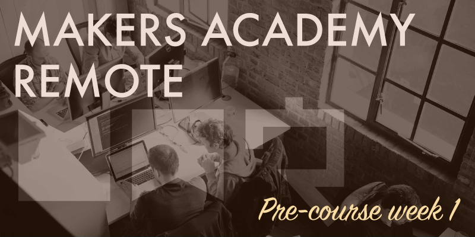

We've reached the end of pre-course week 1, and that first week has flown by so fast. The learning topics for the week covered the Unix command line and Git, with a little information thrown in regarding text editors and setting up your development environment correctly.
Getting started
The day after the pre-course launch event we were sent an email containing instructions for the week's work. We were given a link to a subdomain of the Makers Academy site, which listed the pre-course tasks for all four weeks, grouped by category, and we were told which to complete during week 1. We were instructed to log in to this subdomain with our GitHub credentials, which allowed for the various items within the list to be automatically ticked off when we'd completed them and submitted their code to GitHub.
All training materials and exercises for the four week long pre-course are accessible from the start, so it's up to us to regulate our working pace, and further weekend challenges will be emailed to us by every Friday evening, which needs to be completed by 10am the next Monday. Training material for each topic is flagged as either required or optional if you have the time, and there are also several compulsory exercises and challenges. Some of the training material has been produced by Makers Academy, whereas the rest comprises links to third-party content.
The work
The work required for pre-course week 1 has been pretty much how I expected it to be. Before the pre-course began I'd done some self-directed study on the basics of the Unix command line and Git, and this week's training material quickly ran through those basics again before increasing in difficulty noticeably. The level of challenge did feel appropriate however, it's been difficult enough that I know that further study is required to truly grasp a lot of it, but not so difficult that I didn't know how to proceed at any time.
Getting to known each other
An important step this week has been getting used to communicating with the rest of the cohort online. We now have several dedicated Slack channels, which for the most part are shared by the on-site and remote students. The pre-course material is exactly the same for both the on-site and remote students, so it makes sense for us to communicate as one big group. During the pre-course several of us are in full-time employment, myself included, so we've all been logging in to Slack at different times of the day fitting around our schedule. Even so, the feeling of community is building already. The Slack channels provide a nice mix of general chat, people asking for help and people helping others. For major problems we're advised to open a GitHub issue, which essentially means typing your problem up in to a specific area of GitHub where other students and coaches can offer advice, preserving the issue and its resolution for future students. However for general chat and smaller issues, Slack is the place to go. Off-topic chat has already turned to discussing how best we remote students can emulate the complete on-site experience. So far we haven't managed to find a solution for going to the pub online, but I did propose that we can emulate Makers Academy's near-legendary on-site Nerf fights (which I heard about via Twitter) by firing a suitable emoji at one another via Slack. This soon turned in to a full-blown bow-and-arrow emoji fight, in which I was betrayed by my ally and had to resort to shooting myself in the head. It sounds silly, and it was, but this kind of team building will only help later in the course when we're all pair coding through some tough challenges, I'm sure.
Weekly progress
It's useful to see how others in the cohort are progressing through the pre-course work, to get a feeling for how you compare. Some students already seem to be struggling, while others appear to be quite knowledgeable and are able to help the others. I find myself pretty much in the middle right now, I've been able to assist with some issues, while learning a lot from others.
To individually monitor our own progress we've each been given a form to fill in each week, which then needs to be pushed to GitHub so that the Makers Academy team can view it. On the form we have to list:
- Most Important Things I Learned:
- Things I Struggled With The Most:
- Changes I Plan to Make Next Week:
- Other Experiences This Week:
I find the “Changes I Plan to Make Next Week:” part the most difficult to answer at this stage, as it's very early in the process to know where you might be going wrong, and where changes need to be made. I'm sure as we progress through the course my entires on this form will become more useful.
One week down
Looking back over the past week, while I still feel like a complete beginner it's clear that I've already learned a huge amount. I can already navigate my Mac pretty well using only the command line, and surprisingly that doesn't only mean the basics of navigation. I can perform advanced tasks like searching for all environment variables that begin with the letter ‘T' (for example), counting them and outputting the result to a new file, using command substitution to place the result in to the middle of a text string. For reference it looks like the below, which would have been a foreign language to me only a week ago:
echo "Overall count: $(env | grep ^T | wc -l)" > file.txt
Without a doubt this level of command line knowledge will come in really useful. I'm also progressing well with my Git studies, and it's already becoming second nature to regularly commit my work to GitHub. It's very clear that there's a great deal more to learn about both the command line and Git, and I have a long way to go before I even progress past the basics. I'll definitely keep strengthening these skills throughout the course, but as for extending my Unix command line and Git knowledge substantially that will likely be on my own time for the foreseeable future, because the remaining three weeks of the pre-course will all be focused on learning the Ruby programming language.